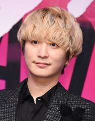
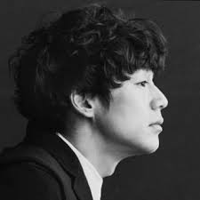

SEKAI NO OWARI
SEKAI NO OWARI
日本の男女混合4人組バンド。
旧称は「世界の終わり」。
2007年結成。
所属事務所はTOKYO FANTASY。
所属レコード会社はユニバーサルミュージックで、所属レーベルはVirgin Music。
公式ファンクラブは「S.N.O.W.S」と「R.A.I.N.S」。
略称は「セカオワ」。
バンド名の由来
「SEKAI NO OWARI」というバンド名は、初代リーダーであるFukaseが、
「ADHDなどの障がいによる困難な生活」「閉鎖病棟への入院」「医師になるために勉強した記憶が薬の副作用で消える」などの辛い経験をし、
絶望し自分の世界が終わったと思ったが、その時に残されていたのが音楽と今の仲間だけだったので、「世界の終わり」から始めてみようというポジティブな意味が込められている。
2011年のメジャーデビュー時に表記を「世界の終わり」からアルファベット表記に改めた。
また、2012年にアルバム『ENTERTAINMENT』の発表以降は、DJ LOVE以外のメンバーも本名を伏せている。
Fukase

本名：深瀬 慧（フカセ サトシ）
生年月日：10月13日
Nakajin

本名：中島 真一（ナカジマ シンイチ）
生年月日：10月22日
Saori

本名：藤崎 彩織（フジサキ サオリ）
生年月日：8月13日
DJ LOVE
本名：不明（不明）
生年月日：8月23日
楽曲一覧
♪♪♪♪♪♪